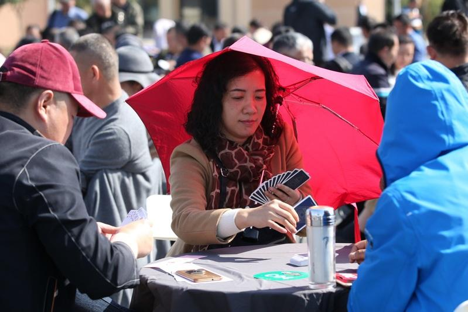

中国政商界风行的「掼蛋」扑克牌游戏，近来被官媒北京青年报连续3天批判，但多家地方官媒今天接连发表针锋相对的文章。其中带头的新华日报直指，掼蛋只是「不同人选择的不同休闲方式」而已，不需要谁来判定对错，引起议论。
北京青年报原是共青团北京市委员会的机关报，2021年划归北京日报集团，因此成为中共北京市委旗下的机关报之一；新华日报则是中共江苏省委的机关报，是新华报业传媒集团的一员。两者均属地方官媒。
新华日报旗下的微信公众号「江东观潮」，今天中午发表题为「掼蛋的『打』与『被打』」的长篇文章，矛头直指北京青年报的3篇评论，成为多个地方官媒对「掼蛋」提出不同意见的先锋。
文章直指，最近有媒体发表「宏论」，从「警惕掼蛋沉迷助长消颓之气」、「全民掼蛋的躺平之风该管管了」、「亟须破除掼蛋编结的圈子文化」等角度，对掼蛋风潮进行「全面、深刻而猛烈」的批评。而文章指涉的这3篇「宏论」，正是北京青年报3篇评论的标题。
这篇文章除详细整理出中国舆论对「掼蛋」的正反两面意见外，并批评有的网友「只讲立场，不讲对错，只讲态度，不讲道理，只讲判断，不讲事实」，把观点讨论变成道德审判；有的网友「动辄上纲上线，乱扣帽子，乱打棍子，动辄义正词严，口诛笔伐」；有的网友则「高高在上，不体味民间冷暖，不知道人间烟火，缺乏包容之心，共情之意，满脸肃杀之气」。
文章强调，无论「掼蛋」还是最近流行的「晒背」或其他，只是「不同人选择的不同休闲方式」而已。只要不是原则性的、关乎底线的，「不需要谁来判定对与错」。动辄口诛笔伐、上纲上线的思维和文风惯性，已经和今天的发展环境、社会心态不再兼容。
继新华日报后，四川省成都市媒体红星新闻以「反对掼蛋，不能仅仅『反对掼蛋』」为题发表文章指出，掼蛋本质上是扑克。必须认清的是，掼蛋游戏只是「表」，不正之风才是「里」。真正值得警惕的是隐藏在组局之下的吃吃喝喝、来来往往。真正要反对的是附着在游戏之上的圈子之风、享乐之风。
湖南媒体红网也以「反对掼蛋？别扯蛋了！」为题反问，掼蛋何罪之有？每个人都有选择自己生活方式的权利，「用得着别人操心，轮得到别人指责吗」？「媒体」有什么理由横加指责，并冠以种种罪名？「如果有人心术不正，任何一种娱乐方式，扑克牌、麻将、猜拳、比腕力都可被用来赌博或搞腐败，是不是都要禁止呢？」
山东媒体新黄河则以「批评掼蛋不能成为脱离实际的道德狂欢」为题，强调任何一项成瘾的流行现象，背后都有赖以为生的社会土壤。像一些企业主将掼蛋视为「高端局的入场券」，他们为什么放弃对正常市场秩序的信任？年轻人为何躲进牌桌，背后是否有对未来预期减弱的心态？而背后的主角，从来不是掼蛋。
北京青年报5日起连续3天发表评论文章，以新华日报所指的「警惕掼蛋沉迷助长消颓之气」、「全民掼蛋的躺平之风该管管了」、「亟须破除掼蛋编结的圈子文化」为题强烈批判掼蛋，引发中国舆论关注。
星岛网报导，北京青年报身为中共北京市委机关报，对一项新兴纸牌游戏发出如此严厉的措辞，「肯定不是无的放矢」。而近期中国党政机关已在内部下达「禁蛋令」；中国网络更流传一张「党员领导干部个人自查事项报告表」，要求官员必须向组织如实汇报是否存在通过打牌、打麻将、「掼蛋」等方式搞团团伙伙等。
在这种情况下，不少中国网友对新华日报等地方官媒，今天突然一齐对北京青年报的3篇评论发难颇感好奇，纷纷询问「咋回事」、「要造反了吗」，或是认为「水有点深」、「有猫腻（不可告人之处）」；也有网友认为，「不同意见很好呀，平常多这样就更好了」。